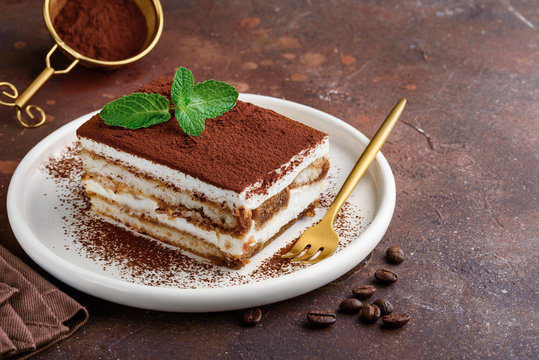

Tiramisu Recipe

Description
Tiramisu is a type of Italian dessert made with layers of coffee-soaked ladyfingers and mascarpone cheese.
Ingredients
- 500g mascarpone cheese
- 200g sugar
- 4 eggs
- 1 packet of ladyfingers
- 1 cup of espresso coffee
- 1 tablespoon of cocoa powder
- 1 tablespoon of rum
Steps
<ól>
Separate the egg yolks from the whites.
Beat the egg yolks with the sugar until light and fluffy.
Add the mascarpone cheese and rum to the egg yolk mixture.
Beat the egg whites until stiff peaks form.
Fold the egg whites into the mascarpone mixture.
Dip the ladyfingers in the coffee and layer them in a dish.
Spread a layer of the mascarpone mixture over the ladyfingers.
Repeat the layers until all the ingredients are used up.
Chill in the refrigerator for at least 4 hours.
Sprinkle with cocoa powder before serving.
Back to home